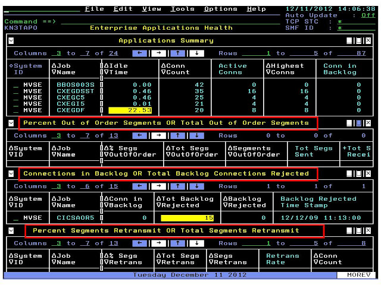
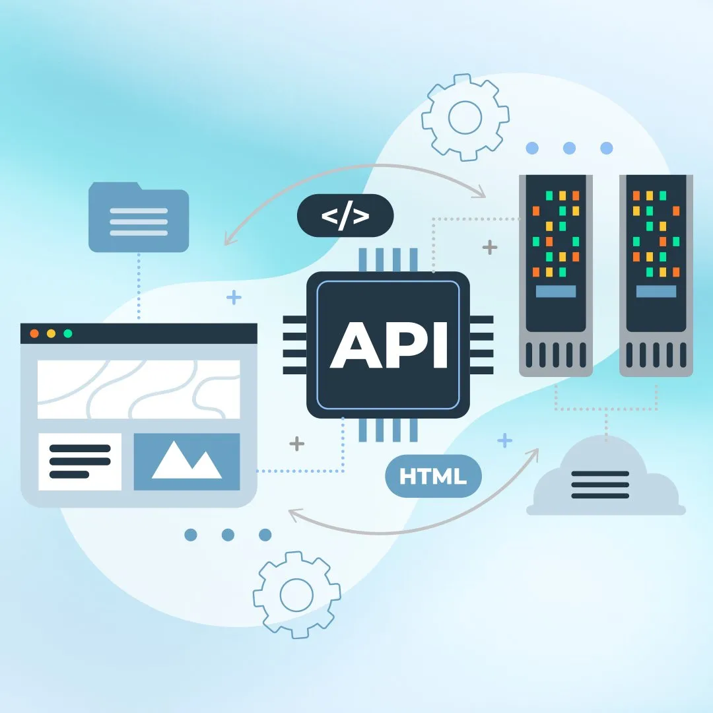

Mainframe Monitoring System
REXX jobs extracting CICS and z/OS metrics, exposed via REST to feed Grafana dashboards (latency, transactions, regions, queues).
REXXCICSGrafanaAPIs
IBM z/OS • DB2 • CICS • REXX • VSAM • Python • APIs
Soy un ingeniero especializado en IBM z/OS, con experiencia en la operación,
supervisión y automatización de entornos mainframe orientados a la alta disponibilidad.
He trabajado con CICS, REXX, VSAM, TSO/ISPF, JCL y Python,
desarrollando herramientas para monitoreo técnico, validación de procesos y optimización de
tareas operativas dentro de sistemas críticos.
Actualmente estoy fortaleciendo mis conocimientos en DB2 para z/OS, utilizando
herramientas como QMF 9.1.0 y DB Admin Tool 7.2.0 para el análisis de datos,
consultas SQL y la exploración de componentes clave del entorno transaccional.
Mi enfoque profesional está orientado a mejorar la eficiencia operativa, asegurar la
estabilidad de sistemas de misión crítica y apoyar la evolución tecnológica de plataformas legacy.

REXX jobs extracting CICS and z/OS metrics, exposed via REST to feed Grafana dashboards (latency, transactions, regions, queues).

Exposing COBOL and CICS programs as REST services. Includes auth, payload validation, and monitoring.
Python scripts to parse VSAM datasets and produce clean CSVs for downstream analysis and reporting.
Insignias verificadas emitidas a través de Credly.
Hands-on with query/reporting flows and DB administration utilities.
REXX + JCL pipelines for recurring maintenance and health checks.
Open to collaboration and knowledge sharing around mainframe modernization.